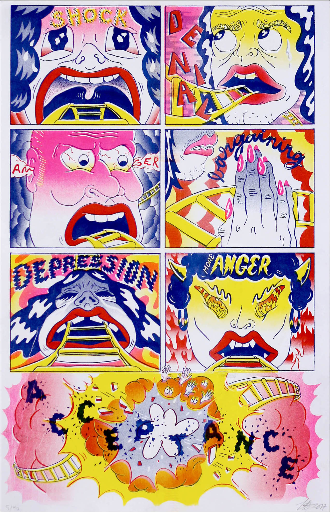
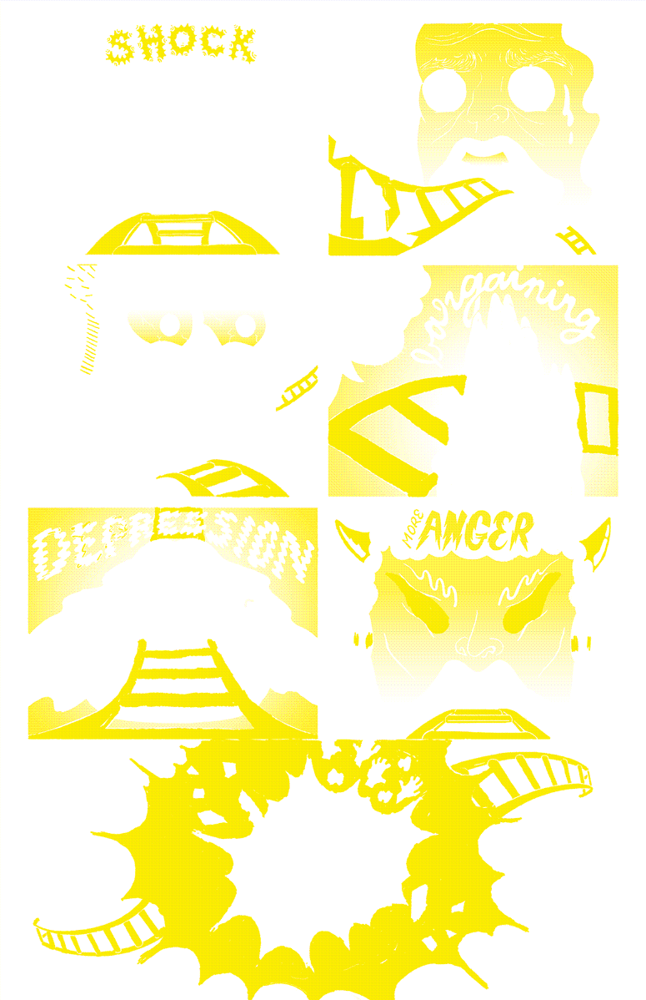
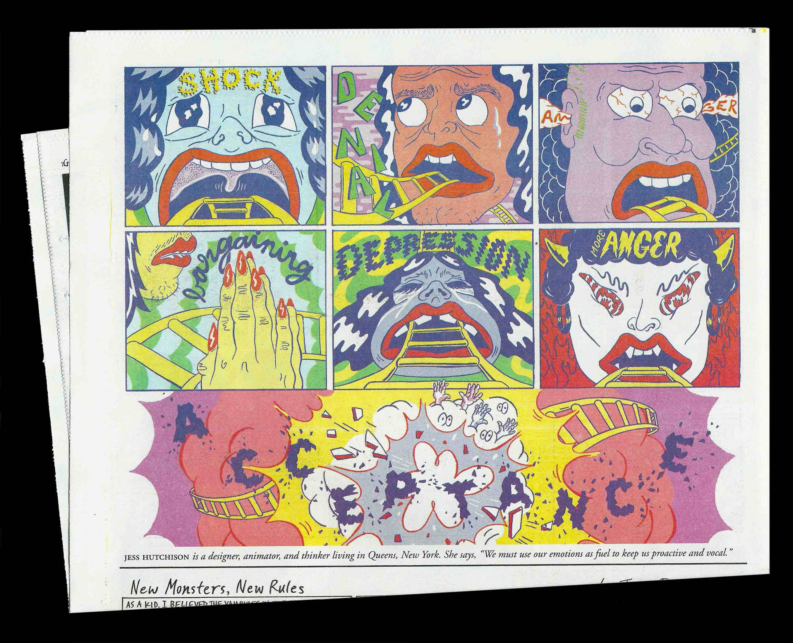

Los Angeles band, Sadgirl, made a limited edition zine and flexi-disc for their single, “Little Queenie.” Being a love ballad, I illustrated idioms pertaining to romance such as: apple of my eye, ball and chain, and melt in your arms.
Art Direction Illustration
2017
Acceptance
Resist!



After the election, I saw charts illustrating the 5 Stages of Grief floating around the internet. Personally, I vacillated between all of the emotions listed, rather than experiencing a succession of feelings.
Art Direction llustration
2017
Losing Count
Gift Wrap
The artist Gift Wrap wanted to fully embrace the laidback lifestyle of the suburbs of Los Angeles. I was asked to art direct and photograph his debut album "Losing Count".
Art Direction Photography
2017 With Brendon Avalos
Urgent Matter
Pink Sock
Julian Rifkin is a Pop, RnB musician who goes by the moniker Pink $ock. He reached out to me to create the album art for his debut EP “Urgent Matter.”
Art Direction Illustration
2017
49 decades
Visionaire
In celebration of their 25th anniversary, luxe art publication, VISIONAIRE, asked artists to create a "commercial" for their favorite issue. I created a looping video composed of public domain footage for their 49th issue, DECADES, to represent the cyclical nature of history.
Gardens and Villa is a LA based synth-pop band. I created surreal imagery and lasers, working as the production and vfx designer, for their music video, “Fixations.”
Art Direction Editing
2016 With Austin Kearns
Everything You Need to Know
The Fader
The FADER's interview series, Everything You Need to Know, asks artists hard-hitting questions, such as: What's your game plan for the zombie apocalypse? Would you ever dye your armpit hair? I animate the answers.
Animation Illustration
2016 — 2017
Assorted Work
Hard Feelings
Hard Feelings is a record label based out of Los Angeles. I am their remote, in-house designer.
Illustration Art Direction
2016 — 2017
ABOUT
Jess Hutchison is an Emmy nominated, Reiki Level I certified, designer, animator, and thinker based in Brooklyn.